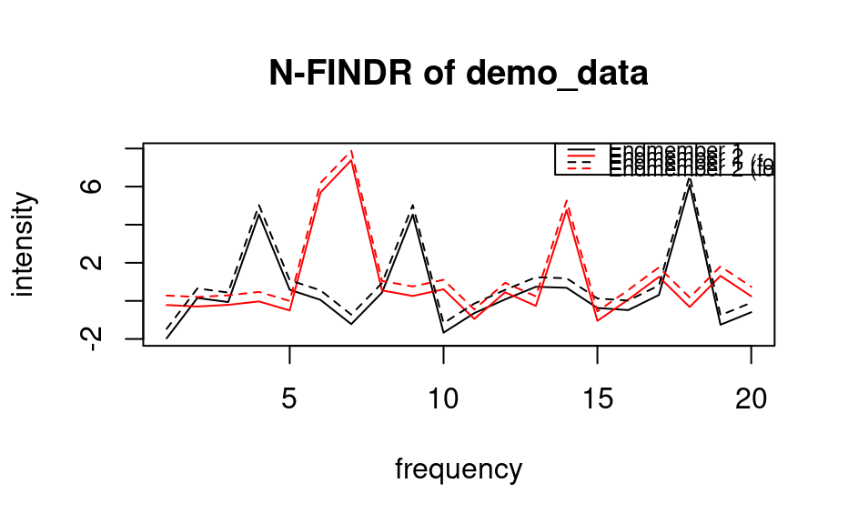

R/nfindr.R, R/nfindr.default.R, R/nfindr.formula.R
nfindr.RdAll the N-FINDR techniques are based on the fact that, in N spectral dimensions, the N-volume contained by a simplex formed of the purest pixels is larger than any other volume formed from any other combination of pixels.
Data to unmix. It will be converted to a matrix using as.matrix. The matrix should contain a spectrum per row. If the dimension of the data is larger than `p-1` then it will be dimensionally reduced using PCA. If you want to reduce the data using some other method then reduce it first and provide the data of `p-1` dimension.
Parameters to be passed to nfindr.default
Number of endmembers.
Locations of the rows in the dataset that will be used to form the initial simplex. Default: Randomly selected indices.
The iteration strategy. Options: "points", "endmembers", "both". By default, "points" are used.
Volume change estimator
volume - straight forward volume calculation without any optimization
height - Use the fact that the simplex volume is proportional to the product of `height` and `base volume`.
Cramer - Using Cramer's rule
LDU - Using LDU matrix decomposition
cofactor - Using the cofactor expansion for calculating `det(E)`
Default: Cramer's rules is used since it has best performance.
Maximum number of iterations to make.
Boolean that indicates whether the actual data used for the calculation (i.e. after dimension reduction) should be stored in the resulting structure.
Debug level. Controls the level of detalization of the output. By default, is 0. If it is 1, then number of replacements also will be returned. 2 - also will add list of vertices at each iteration.
A formula object without a response term
A data frame containing the variables in the model
A list which contains:
data: the original data or reduced data if keep_data
is set to TRUE.
indices: the indices of the spectra which increased the simplex volume the most. These are the indices of the endmembers.
endmembers: the vectors of endmembers in reduced data space.
iterations_count: if debug level higher than 0, number of loop iterations.
replacements_count: if debug level higher than 0, number of actual replacements during iterations.
replacements: if debug level higher than 1, the vectors of indices at all replacement steps. If fact, is used to see how the simplex was growing.
endmembers to extract the spectra; predict
to determine abundances of endmembers in each sample.
data(demo_data)
demo <- nfindr(demo_data, 2)
em <- demo_data[demo$indices,]
em <- rbind(demo_data[c(3,7),], em)
em[3:4,] <- em[3:4,] + 0.5 # a small offset for the found em's
matplot(t(em), type = "l",
col = c("black", "red", "black", "red"), lty = c(1, 1, 2, 2),
xlab = "frequency", ylab = "intensity",
main = "N-FINDR of demo_data")
leg.txt <- c("Endmember 1", "Endmember 2", "Endmember 1 (found)", "Endmember 2 (found)")
legend("topright", leg.txt, col = c("black", "red", "black", "red"),
lty = c(1, 1, 2, 2), cex = 0.75)
